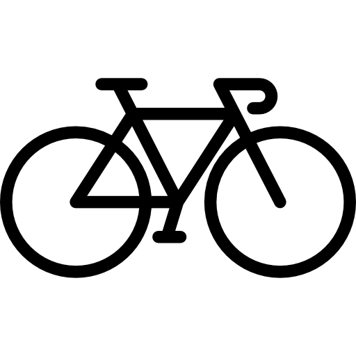
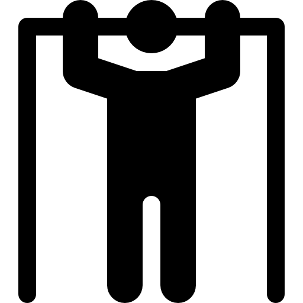

Numer telefonu:
Numer telefonu:  Email:
Email:  Data urodzenia: 09-07-2001
Data urodzenia: 09-07-2001 Miejsce zamieszkania: Wrocław
Miejsce zamieszkania: WrocławO mnie
Mam na imię Hubert! Nauką programowania zajmuję się od kilku miesięcy. Pracuję również jako Asystent biura/ logisty w wypożyczalni samochodowej Kaizen Rent. W lipcu 2023 ukończyłem studia z kierunku Socjologia Ekonomiczna. Swoją przyszłość wiążę z programowaniem. W codziennej pracy i nauce staram się czerpac radość i stawać się coraz lepszym w swojej dziedzinie.
Doświadczenie zawodowe
- 2022- obecnie: Kaizen Rent - Asystent biura
- 2021- 2022- IDC Doradztwo i Szkolenia - Audytor
Języki
- Angielski - B2
- Polski - ojczysty
Wykształcenie
- 2020-2023: Uniwersytet Wrocławski - Socjologia Ekonomiczna
- 2017-2020: LO nr. 1 w Jaworze
Zainteresowania
-
MMA
Jestem pasjonatem MMA od niedługiego czasu, jednak sporty walki towarzyszą mi już od kilu lat. To nie tylko moje hobby, ale również świetna forma aktywności fizycznej i rozwijania umiejętności interpersonalnych. Treningi przynoszą mi nie tylko satysfakcję, ale także wpływają pozytywnie na moje zdrowie fizyczne i psychiczne.
- 
Rower
Z roweru głównie korzystam w celu dostania się z punktu A do punktu B. Jednakże, wieczorna, szybka przejażdżka po mieście na moim single speedzie to jeden z moich ulubionych sposobów na oczyszczenie głowy.
-
Gadżedziarstwo, branża gamingowa
Od kiedy pamiętam ekscytował mnie świat technologii, przeróżnych gadgetów czy gier. Zostało mi tak do dzisiaj... nigdy nie ma złego momentu na zakup nowego gadgetu.
- 
Kalistenika
Pasjonuję się kalisteniką - treningiem opartym na masy własnego ciała. To forma aktywności, która rozwija moją siłę, gibkość i koordynację. Praktykowanie kalisteniki inspiruje mnie do ciągłego doskonalenia i tworzenia nowych ćwiczeń.